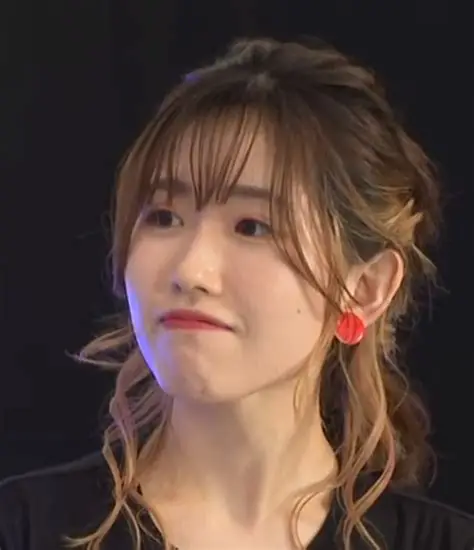

制作团队
《孤独摇滚！》由知名动画制作公司CloverWorks负责制作，该公司以高质量的作品和对细节的注重而闻名。
斋藤圭一郎
导演
代表作：《奇诺之旅》、《更衣人偶坠入爱河》
吉田惠理子
角色设计 · 总作画监督
代表作：《魔法少女小圆》、《三月的狮子》
滨路晶
原作
《孤独摇滚！》漫画作者
声优阵容
实力派声优们为《孤独摇滚！》的角色注入了灵魂，她们的精彩演绎让角色更加生动立体。
青山吉能
配音：后藤一里
代表作：《Wake Up, Girls!》七濑佳乃、《恋爱暴君》古莉
铃代纱弓
配音：伊地知虹夏
代表作：《高分少女》大野晶、《我们无法一起学习》武元润香
水野朔
配音：山田凉
代表作：《后宫之乌》柳寿雪、《SELECTION PROJECT》 花野井玲那

长谷川育美
配音：喜多郁代
代表作：《弱势角色友崎君》七海深奈实、《86-不存在的战区-》芙拉蒂蕾娜·米利杰
音乐制作
原创音乐
动画中的所有歌曲都由专业音乐人创作，完美契合角色性格和剧情发展。
乐器演奏
声优们接受了专业的乐器训练，确保演奏动作的真实性和专业性。
录音过程
录音工作在专业录音室进行，确保声音质量和音乐表现力。
音效设计
精心设计的音效增强了动画的沉浸感，从现场演出到日常生活的细节都经过精心处理。
动画工作室

CloverWorks是Aniplex旗下的动画制作公司，以其高质量的作品和对细节的注重而闻名。 除了《孤独摇滚！》外，该公司还制作了《间谍过家家》、《更衣人偶坠入爱河》、 《奇诺之旅》等多部优秀作品。
《间谍过家家》
《更衣人偶坠入爱河》
《奇诺之旅》
《约定的梦幻岛》
《DARLING in the FRANXX》
制作趣闻
在《孤独摇滚！》的制作过程中，发生了许多有趣的故事和值得关注的细节。
-
真实的乐器演奏动画中所有乐器演奏场景都经过精心制作，声优们实际上接受了乐器训练，以确保演奏动作的真实性。特别是吉他演奏场景，每一帧都经过专业吉他手的指导。
-
角色设计的灵感角色设计师吉田惠理子表示，后藤一里的设计灵感来自于"想要创造一个既可爱又让人心疼的角色"。她的粉色运动服象征着内心的封闭，而吉他却代表着她与外界的连接。
-
音乐制作的用心动画中的每一首原创歌曲都由专业音乐人创作，并且根据角色的性格和成长阶段量身定制。例如，《青春コンプレックス》的歌词完美契合了后藤一里的内心世界。
-
真实场景的参考动画中出现的Livehouse"STARRY"参考了东京下北泽地区真实的音乐场所，制作团队亲自前往实地考察，捕捉了地下音乐场景的独特氛围。